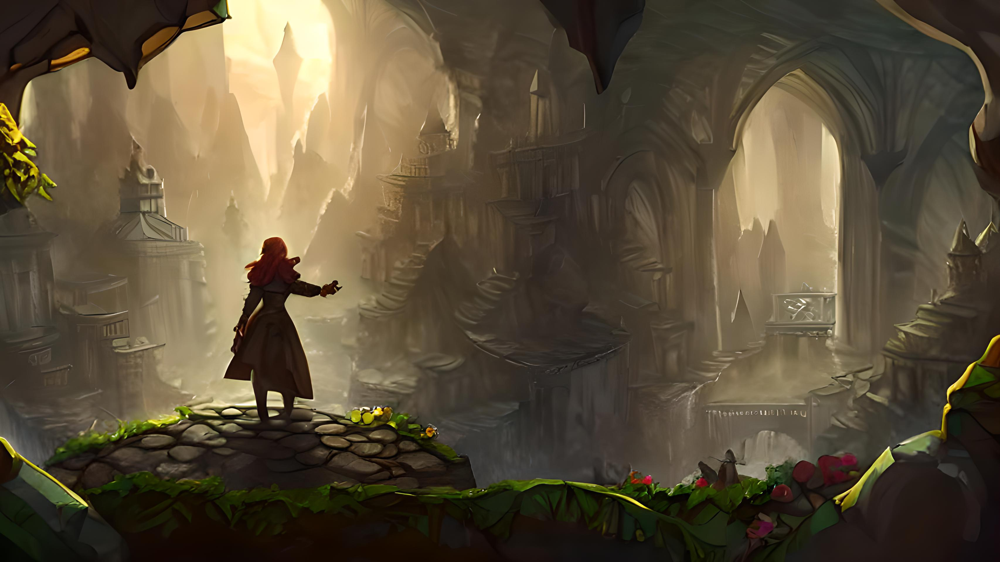
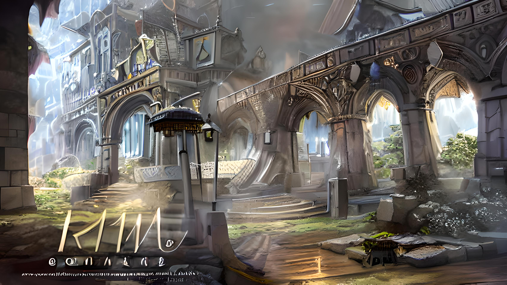

"Adventure Haven": Embark on Prima's Epic Journey Through Engaging Gameplay
Elysian Woods

Mountain Crest
Petraforte
Explore & Quest:
Roam bustling cities, serene forests, and mysterious dungeons, each brimming with quests, hidden treasures, and challenges echoing Prima's audacity and curiosity. Engage with diverse NPCs, form alliances, and shape the narrative through interactions reflecting Prima's own companionships.
Master Fluid Combat:
Engage in strategic battles, employing combat techniques reminiscent of Prima's expertise with magical guns and shield magic. Delve into concealed dungeons teeming with secrets, puzzles, and treasures, mirroring Prima's journey of self-discovery.
Uncover Mysteries:
Piece together enigmatic narratives, uncover long-lost secrets, and unveil ancient prophecies that enrich the game's world. Players can shape their journey through intricate dialogue choices and narrative decisions, wielding empowerment and choice as cornerstones.
Customization & Empowerment:
Customize abilities, weapons, and powers as you progress, enhancing Prima's prowess. Visual opulence further elevates "Adventure Haven," capturing Prima's vibrant world in breathtaking detail.
Breathtaking Landscapes:
Traverse bustling towns, delve into lush forests teeming with life, and uncover mysterious dungeons reminiscent of Prima's journey. Immerse in the game's audio, enriched by sound design and an original soundtrack, much like Prima's journey is accompanied by her inner melodies.
Embark on Your Unique Journey:
"Adventure Haven" effortlessly combines classic RPG gameplay with rich storytelling, inviting players to embody Prima's courage and resilience in their quest for self-discovery. The expansive open world, diverse quests, dynamic combat, immersive character interactions, player agency, and stunning visuals converge to create an experience encapsulating the true spirit of adventure.
Your Saga Unfolds:
Much like Prima's saga unfolds, players embark on their unique journey in the captivating realm of "Adventure Haven." Keep your wits about you and be courageous, for your adventure has only just begun!

{kind=link}
{kind=link}